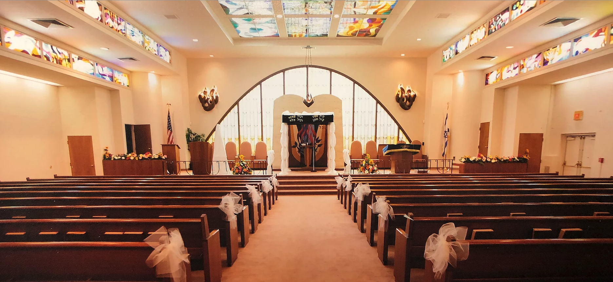
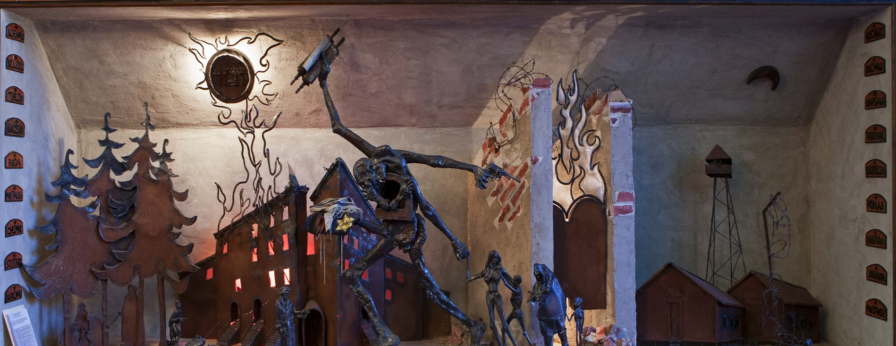

Beth Israel Congregation/Mission Statement The Congregation shall strive to meet the religious, spiritual, educational and social needs of a diverse membership within the broad values of Conservative Judaism. The commitment and participation of all congregants are to be nurtured with the understanding that all contribute value to our community. We cherish the preservation of Jewish ritual and memory, while stressing those new and innovative expressions of our faith and beliefs. The congregation shall promote a warm extended family of Judaism within the synagogue that inspires strong identify and links with Jewish history and the larger Jewish community. We shall encourage family literacy, a spirit of menshlichkeit, and a passionate sense of belonging which stimulates the great potential for vibrancy and meaning that are at the core of our faith.
Beth Israel Synagogue was started in 1923 by a group of men wishing to purchase a church on 7th Street and Elmer. They purchased said church for $13,000.00 and on December13th the Congregation was officially named "The Beth Israel Congregation" of Vineland, NJ . The years that followed were good for the congregation. It steadily grew and prospered, adding a Hebrew School, a Nursery School and a Library. By 1955 the congregation had grown to an all time high of 539 members requiring the Board to decide to build a new building. Ground was broken for a new building in April of 1957 and finished and dedicated by April of 1958.This is the building we are still in today, many years later.
Rabbi Abby Michaleski has been the rabbi at Beth Israel Congregation since June of 2018, moving from part time status to our full time rabbi as of January 2020. As a spiritual leader, she is accessible and down to earth and brings her joyful and creative approach to Judaism into her services and teaching and into our community. Rabbi Abby received ordination in 2015 from ALEPH; The Alliance for Jewish Renewal after nine years of part time study, a Masters degree in Jewish Studies from Gratz College and a B.A. In Psychology from Rutgers University. In addition, Rabbi Abby is a Licensed Clinical Alcohol and Drug Counselor (LCADC) and has worked in the field of Substance Abuse Treatment for over 30 years. Her long term desire to integrate Judaism, wellness and community building led to her co-founding Rapha; The Center for Healing and Spirituality in 2018. Rabbi Abby has also served as the part time rabbi, cantorial soloist and educator at Temple Beth El in Hammonton and M’kor Shalom Congregation in Cherry Hill. Since coming to Vineland Rabbi Abby has become a member of the Chevre Kaddisha as well as the Cumberland County Mental Health and Addictions Board. She lives in Sicklerville and gets to Glassboro to visit her daughter, son in-law and two grandchildren whenever possible.